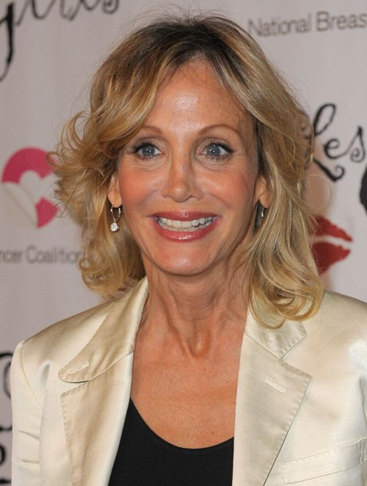

Arleen Sorkin
Arleen Frances Sorkin (14 października 1955 - 24 sierpnia 2023) była amerykańską aktorką, scenarzystką, prezenterką telewizyjną i komiczką. Sorkin znana jest z roli Calliope Jones w serialu NBC Days of Our Lives oraz z bycia prawdziwą inspiracją i głosem dla postaci Harley Quinn z DC Comics, współtworzonej przez jej przyjaciela Paula Diniego w Batman: The Animated Series.
Oprócz udzielania głosu, postać Harley Quinn została oparta na niej, po tym, jak Paul Dini (jej przyjaciel od czasów college'u), zobaczył ją grającą błazna z sekwencji snów w operze mydlanej Dni naszego życia. Dini następnie wzorował Harley Quinn na Sorkin, włączając takie aspekty, jak jej maniery i "bardzo zgryźliwa, mądra, bąbelkowa blondynka" osobowość. Podczas nagrywania głosu Harley Quinn, Sorkin mówił z jej normalnym brooklyńskim akcentem, jednocześnie wprowadzając "trochę dźwięku jidysz", ponieważ Dini uczynił postać Żydówką, kolejnym aspektem postaci zapożyczonym od Sorkina. Harley Quinn po raz pierwszy pojawiła się w odcinku Batman: The Animated Series "Joker's Favor", który pierwotnie miał pojawić się w jednym odcinku, ale reakcja na postać i głos Sorkina była pozytywna, więc Quinn była regularnie wpisywana do serialu i pojawiała się w kolejnych serialach DC Animated Universe, w tym w The New Batman Adventures, Static Shock, Justice League, Gotham Girls i filmie animowanym Batman Beyond: Powrót Jokera. Jej ostatnie występy jako Harley Quinn miały miejsce w grach wideo Batman: Arkham Asylum (2009) i DC Universe Online (2011).
Sorkin wyszła za mąż za scenarzystę-producenta telewizyjnego Christophera Lloyda w 1995 roku, z którym miała dwóch synów, Eli i Owena. Arleen Sorkin zmarła w Los Angeles 24 sierpnia 2023 roku w wieku 67 lat z powodu powikłań zapalenia płuc i stwardnienia rozsianego.